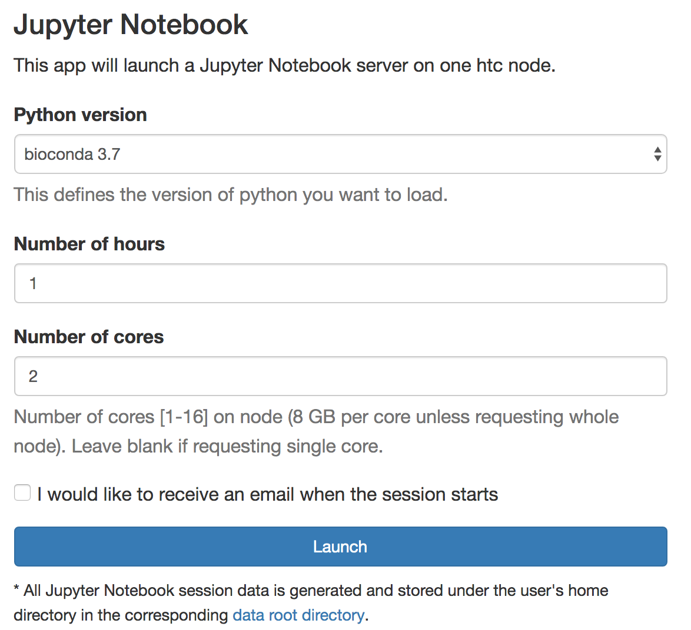
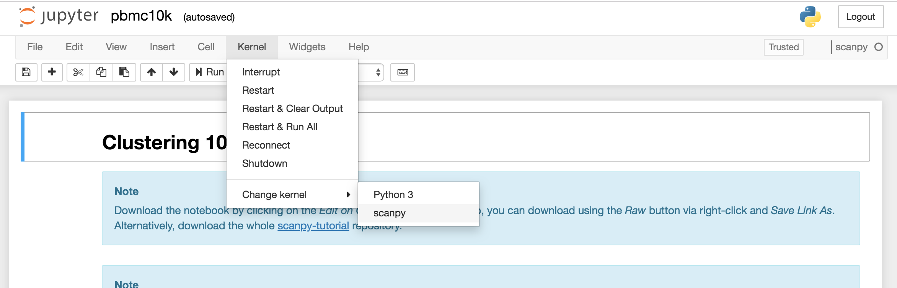

Single Cell Data Analaysis¶
Spring 2025 CRC Bioinformatics workshops¶
Recordings and workshop materials
10X single cell techniques and Getting started with Cellranger
Tuesday, Feb. 4, 1:00pm-4:00pm
The workshop will begin with a brief overview of the single cell resources offered by 10X Genomics and provided through the Single Cell Core. Products discussed will include 3’ and 5’ gene expression, fixed RNA profiling (FLEX) and multiome (ATAC + gene expression from the same cell).
This workshop will teach users on how to perform sample demultiplexing, barcode processing, single cell 3’ and 5’ gene counting V(D)J transcript sequence assembly and annotation, and Feature Barcode analysis from single cell data using 10x Genomics’ Cell Ranger analysis pipeline.
Prerequisite: CRC user account
Presented by Single cell core Heidi Monroe and Oge Ezenwa
Single cell data analysis using Seurat
Tuesday, Feb. 11, 1:00pm-4:00pm
This hands-on workshop introduces the analysis of single cell data using Seurat. The users will learn how to process Cell Ranger count matrices into a Seurat object, run standard pre-processing steps for scRNA-seq data in Seurat which involves selection and filtration of cells based on QC metrics, data normalization and scaling, and detection of highly variable features. We will also show how to identify cell types and answer biological questions using differential gene analysis.
Prerequisite: CRC user account, Beginner level R
Presented by Oge Ezenwa
Single-cell trajectory inference methods
Tuesday, Feb. 18, 1:00pm-4:00pm
Tuesday, March. 25, 1:00pm-4:00pm (rescheduled)
Single-cell trajectory inference is a computational technique to study cell development over time. In this workshop, we will theoretically introduce the concept of trajectory inference and pseudo-time. In the practical section, we will hand on a real single-cell dataset to run through the computational pipelines. Single-cell clustering, trajectory inference, pseudo-time calculation, visualization, and differential analysis will be introduced. Presented by Silvia Liu
RNA velocity of single cells
Tuesday, Feb. 25, 1:00pm-4:00pm
In this workshop, we will provide a comprehensive introduction to single-cell RNA velocity, a method used to infer the future transcriptional states of cells in dynamic biological processes by analyzing the spliced and unspliced mRNA. Participants will gain hands-on experience with real single-cell datasets using a Python package scVelo to 1). understanding the different analyzing modes for RNA velocity: deterministic, stochastic, and dynamical, 2). estimating RNA velocity, 3) identifying dynamic genes, and 4). visualization to explore cellular transitions. For incorporation of chromatin accessibility data, the python package MultiVelo will also be presented for examining the temporal relationship between the epigenome and transcriptome.
Prerequisite: CRC user account, beginner level Unix and Python
Presented by Jiefei Wang and Tracy Tabib
Single cell gene regulatory network analysis
Tuesday, March 11, 1:00pm-4:00pm
How do cells control gene activity? In this workshop, we’ll explore Single-Cell Gene Regulatory Network (GRN) Analysis, using scRNA-seq to see what’s active and scATAC-seq to uncover regulatory potential. We’ll go from theory to hands-on application, learning how to infer GRNs from single-cell data. Then, we’ll push further into dynamic GRNs, exploring how gene regulation shifts over time and across cell states. Expect a mix of concepts, real-world datasets, and practical workflows. Whether you're new to GRNs or refining your approach, this session will equip you with key insights and tools. Presented by Swapnil Keshari on behalf of Jishnu Lab
Co-expression inference from single cell sequencing data
Tuesday, March 18, 1:00pm-4:00pm
In this workshop, we will provide a brief introduction to the analysis of gene co-expression in single-cell RNA sequencing (scRNA-seq) data using hdWGCNA, a powerful method for constructing hierarchical co-expression networks (https://smorabit.github.io/hdWGCNA/index.html). By identifying modules of co-expressed genes, researchers can gain insights into underlying biological processes. Participants will gain hands-on experience constructing and analyzing co-expression networks with demo single-cell datasets to 1). identify gene co-expression modules, 2). relate co-expression modules to traits/phenotypes or external information, 3). interpret co-expression networks to identify key regulatory hub genes, and 4). visualization for manuscripts.
Prerequisite: CRC user account, beginner level Unix and R programming, basic familiarity with single-cell analysis.
Presented by Jiefei Wang
Integrative single cell RNA-seq and ATAC-seq data analysis
Tuesday, April 1, 1:00pm-4:00pm
This hands-on workshop focuses on demonstrating how to analyze a single-cell dataset that captures both DNA accessibility and gene expression in the same cells. Using the Signac and Seurat packages, attendees will learn to:
- Annotate scATAC-seq datasets using an existing scRNA-seq dataset.
- Co-visualize cells from scRNA-seq and scATAC-seq experiments.
- Project scATAC-seq cells onto a UMAP derived from scRNA-seq data for integrative analysis.
This workshop emphasizes practical, hands-on experience for effective multiomic single-cell data interpretation.
Prerequisite: CRC user account, Beginner level R
Presented by Oge Ezenwa
Reference Mapping of single cell data
Tuesday, April 8, 1:00pm-4:00pm
Single-cell reference mapping aims to map a query dataset to a well-studied reference dataset. In this workshop, we will introduce how to perform dimension reduction, visualization and clustering using reference mapping strategies. In the first half, we will provide a theoretical introduction of these concepts. In the second half, we will hand on a query and a reference dataset to run through the pipelines. In addition to the in-house reference dataset, we will also introduce data mining on some public single-cell atlases. Presented by Silvia Liu
Single cell TCR data analysis
Tuesday, April 15, 1:00pm-4:00pm
This workshop provides a comprehensive introduction to computational methods for analyzing T cell receptor (TCR) sequencing data, covering raw data processing, clonotype identification, diversity analysis, and visualization. Participants will gain hands-on experience with standard tools (MiXCR, immunarch, scRepertoire) and learn to interpret TCR repertoires in contexts like cancer immunology, and infectious diseases. Presented by Dhivyaa Rajasundaram
Spring 2023 CRC Bioinformatics workshops¶
Recordings and workshop materials
10X Genomics single cell techniques
Monday, March 27, 2023, 1:00pm - 2:30pm
This workshop will illustrate the technological basis of 10x Genomics single cell analysis. Several chemistries for applications beyond single cell RNA-Seq and the sequencing read architecture of each application will be discussed. Presented by Richard Duerr
Single-cell Analysis with Seurat
Tuesday, March 28, 2023, 1:00pm - 4:00pm
This workshop will briefly review the cellranger pipelines to process raw reads into expression values. The hands-on training will include reading the count data in R, quality control, normalization, dimensionality reduction, cell clustering, and finding marker genes. The Seurat pipeline will be covered. We will also focus on trajectory analysis with Monocle3. Presented by Dhivyaa Rajasundaram
Single-Cell Analysis with Bioconductor
Tuesday, April 4, 2023, 1:00pm - 4:00pm
This workshop will teach how to perform scRNAseq analysis using Bioconductor. The training will include many aspects of analysis such as normalization, cell type annotation of clusters, and pseudo-bulk differential gene expression. Similarities and differences to the Seurat pipeline will be mentioned. Presented by Paul Cantalupo (Genomics Analysis Core)
Annotating single-cell transcriptomics
Thursday, April 6, 2023, 1:00pm - 4:00pm
Single-cell transcriptomics can quantitatively measure and identify cell types and dynamics based on gene expression profiles. Accurate annotation of cells is the foremost step for downstream analyses. In this workshop, we will focus on how to annotate different cell populations in human biospecimens using automatic or manual approaches, and detect cellular states for biological interpretation. We will also discuss the recommendations, challenges, and best practices for the selection of reference databases, probability models, and relevant computational tools. Presented by Riyue Bao
Advanced Single-Cell Analysis
Tuesday, April 11, 2023, 1:00pm - 4:00pm
This advanced workshop will focus on the analysis of multi-omics data and its integration (e.g. CITE-seq, multiome, and DOGMA-seq). The hands-on training will include background introduction and a step-by-step R pipeline with real applications from immunology. Presented by Wei Chen
Deep learning for scRNASeq analysis
Tuesday, April 25, 2023, 1:00pm - 4:00pm
This workshop will review the deep learning algorithms (variational autoencoder, autoencoder, generative adversarial network and supervised DL models ) and their applicability in the single cell RNA-seq processing pipeline. The hands-on training will provide examples to run deep learning RNASeq algorithms.. Presented by Yufei Huang
old materials¶
Analysis of Single Cell RNASeq¶
Today it is possible to obtain genome-wide transcriptome data from single cells using high-throughput sequencing (scRNA-seq). scRNA-seq is a new technology, first publication in 2009. scRNA-seq measures the distribution of expression levels for each gene across a population of cells scRNA-seq allows to study new biological questions in which cell-specific changes in transcriptome are important, e.g. cell type identification, heterogeneity of cell responses, stochasticity of gene expression, inference of gene regulatory networks across the cells. Currently, there are several different protocols in use, e.g. SMART-seq2, CELL-seq and Drop-seq. There are also commercial platforms available, including the Fluidigm C1, Wafergen ICELL8 and the 10X Genomics Chromium.
Cell Ranger¶
The data analysis pipeline of single cell RNASeq starts with the creation of a DGE matrix, which contains gene counts in each cell, from the raw sequencing files. Cell Ranger is a set of analysis pipelines that process Chromium Single Cell 3’ RNA-seq output to align reads, generate gene-cell matrices and perform clustering and gene expression analysis.
From the Cell Ranger manual:
Cell Ranger includes four main gene expression pipelines:
- cellranger mkfastq wraps Illumina's bcl2fastq to correctly demultiplex Chromium-prepared sequencing samples and to convert barcode and read data to FASTQ files.
- cellranger count takes FASTQ files from cellranger mkfastq and performs alignment, filtering, and UMI counting. It uses the Chromium cellular barcodes to generate gene-barcode matrices and perform clustering and gene expression analysis. count can take input from multiple sequencing runs on the same library.
- cellranger aggr aggregates outputs from multiple runs of cellranger count, normalizing those runs to the same sequencing depth and then recomputing the gene-barcode matrices and analysis on the combined data. aggr can be used to combine data from multiple samples into an experiment-wide gene-barcode matrix and analysis.
- cellranger reanalyze takes gene-barcode matrices produced by cellranger count or cellranger aggr and reruns the dimensionality reduction, clustering, and gene expression algorithms using tunable parameter settings.
These pipelines combine Chromium-specific algorithms with the widely used RNA-seq aligner STAR. Output is delivered in standard BAM, MEX, CSV, HDF5 and HTML formats that are augmented with cellular information.
10x pipelines require sequencer FASTQs (with embedded barcodes) as input. The location of the 10x barcode varies depending on product and reagent version.
Single Cell Gene Expression Datasets
We download Chromium Demonstration (v3 Chemistry) > Cell Ranger 3.0.0 > 10k PBMCs from a Healthy Donor (v3 chemistry) and analyze this data using CellRanger on HTC cluster.
Description of this dataset:
Peripheral blood mononuclear cells (PBMCs) from a healthy donor (the same cells were used to generate pbmc_1k_v2, pbmc_10k_v3). PBMCs are primary cells with relatively small amounts of RNA (~1pg RNA/cell).
11,769 cells detected
Sequenced on Illumina NovaSeq with approximately 54,000 reads per cell
28bp read1 (16bp Chromium barcode and 12bp UMI), 91bp read2 (transcript), and 8bp I7 sample barcode
run with --expect-cells=10000
wget http://s3-us-west-2.amazonaws.com/10x.files/samples/cell-exp/3.0.0/pbmc_10k_v3/pbmc_10k_v3_fastqs.tar
tar xvf pbmc_10k_v3_fastqs.tar
Check the data:
zcat pbmc_10k_v3_S1_L001_I1_001.fastq.gz |head -n 20
This is 8bp I7 sample barcode.
zcat pbmc8k_S1_L007_R1_001.fastq.gz |head -n 20
This is 28bp read1 (16bp Chromium barcode and 12bp UMI).
zcat pbmc_10k_v3_S1_L001_R2_001.fastq.gz |head -n 20
This is 91bp read2 (transcript).
To analyze the dataset, submit the following job to HTC cluster.
#!/bin/bash
#
#SBATCH -t 3-00:00 # Runtime in D-HH:MM
#SBATCH --job-name=pbmc10k_cellranger
#SBATCH -c 16
#SBATCH --mem=120g
module load cellranger/3.0.2
cellranger count --id pbmc_10k_v3 \
--fastqs pbmc_10k_v3_fastqs \
--transcriptome=/bgfs/genomics/refs/CellRanger/refdata-cellranger-GRCh38-3.0.0 \
--localcores=16 \
--localmem=119 #--jobmode=slurm --maxjobs=8
--localcores=$SLURM_CPUS_PER_TASK used the allocated cores to perform computation. If your sample is large, you can
use slurm to submit extra jobs --jobmode=slurm --maxjobs=8. This will submit extra 4 core jobs, and maximum number of
jobs is 8.
If you get raw sequence data, an extra step mkfastq is required. You can use the following job template.
#!/bin/bash
#
#SBATCH -N 1 # Ensure that all cores are on one machine
#SBATCH -t 2-00:00 # Runtime in D-HH:MM
#SBATCH --job-name=cellrangermkfatsq
#SBATCH --cpus-per-task=4 # Request that ncpus be allocated per process.
#SBATCH --mem=60g # Memory pool for all cores (see also --mem-per-cpu)
module load cellranger/3.0.2
cellranger mkfastq --id=sampleID \
--run=/path/to/your/sequence/data/ \
--samplesheet=/path/to/your/sequence/data/input_samplesheet.csv \
--localcores=$SLURM_CPUS_PER_TASK \
--localmem=59
Under pbmc_10k_v3/outs, there is file named web_summary.html, which is a summary HTML file containing summary metrics and automated secondary analysis results. The pbmc_10k_v3/outs/raw_feature_bc_matrix contains every barcode from fixed list of known-good barcode sequences. This includes background and non-cellular barcodes. The pbmc_10k_v3/outs/filtered_feature_bc_matrix cntains only detected cellular barcodes.
Secondary Analysis in R¶
For 10x genomics single cell RNASeq data, your best option is definitely processing the raw data using the 10x Genomics free proprietary software Cell Ranger. It uses STAR to map. However, I would not trust Cell Rangers analysis beyond QC readouts, after generating the raw and filtered UMI matrices. The rest of the analysis is applied on this matrix file. QC determines which cells to exclude from downstream analysis because of various reasons like the suspicion of doublets or cellular stress. Normalization and scaling are then performed to compensate for the sparsity of data because of the low mRNA capture rate. Then, dimension reduction is done based on the most differentially expressed genes. Finally, if done correctly, visualization of the data will result in plots showing the relatedness of each cell to its neighbor in two- or three-dimensional space. You can process the unfiltered matrix with an R Bioconductor package like Seurat or Monocle 2. Both are very easy to use, were designed to be compatible with data from droplet devices like 10X, and can give you more reliable results and control over your workflow than CellRanger will.
Seurat¶
You can use RStudio server on ondemand to perform Seurat analysis. Point firefox or Chrome web browser to ondemand.htc.crc.pitt.edu. click Interactive Apps > RStudio Server, choose R version 3.6.0.
Open Rmarkdown file /bgfs/genomics/fangping/scRNASeq/pbmc10k_tutorial.Rmd, and follow the steps. You can get the following results.
Scanpy¶
Scanpy is a scalable toolkit for analyzing single-cell gene expression data. It includes preprocessing, visualization, clustering, pseudotime and trajectory inference and differential expression testing. The Python-based implementation efficiently deals with datasets of more than one million cells.
You can use jupyter notebook on ondemand to run interactive sessions. I show you how to install local python packages in virtual environment and generate ipykernel to be used on jupyter notebook on ondemand.
Logon HTC login node, load the proper python module python/bioconda-3.7-2019.03
module load python/bioconda-3.7-2019.03
conda create -n scanpy python=3.6
source activate scanpy
conda install seaborn scikit-learn statsmodels numba pytables
conda install -c conda-forge python-igraph louvain
pip install scanpy
conda install ipykernel
environment location: /ihome/fmu/fmu/.conda/envs/scanpy
python -m ipykernel install --user --name scanpy
(scanpy) [fmu@login0b ~]$ python -m ipykernel install --user --name scanpy
Installed kernelspec scanpy in /ihome/fmu/fmu/.local/share/jupyter/kernels/scanpy
Copy /bgfs/genomics/fangping/scRNASeq/pbmc10k.ipynb to your home directory.
Logon ondemand ondemand.htc.crc.pitt.edu, Interactive Apps > Jupyter Notebook
Select Python version bioconda 3.7, choose Number of hours and Number of cores, click Launch

Connect to jupyter notebook and open pbmc10k.ipynb, click Kernel > Change kernel > scanpy to activate the
scanpy ipykernel.

Follow the steps. You can get the following results.